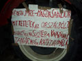
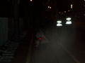

A Lehel csarnoknál bepakoltunk...
... a Hõsök terén meg kipakoltunk. No de hol vannak a gazdák?
Itt vannak. Illetve itt sincsenek, csak a traktoraik. Bizony, jó sok van belõlük!
Megkérdeztük a rendõröket, merre vannak a gazdák. Arra, a sátorban, mondták.
Elindultunk az óriási traktorok között, s közben megcsodáltuk, milyen szép és modern gépekkel dolgoznak mostanság a gazdák. Azaz pontosabban dolgoznának, ha hagynák õket.

Diszkrimináció. "Fehér embernek a géphez nyúlni tilos!"
BiG közben felzabálta az egyik pogácsát az ellátmányból. Mondtuk neki, hogy ne legyen paraszt.
Megyünk
Az ott két rendõr
Sötétben rejtõzõs
Olasz zászlós
Oldschool traktor
Verses. Érdekes megfigyelni, hogy gazduramat egyre jobban elkapta a forradalmi hevület írás közben.
A gazdák panaszainak egyike. Nehezen fogják megérteni õket a pestiek, nem túl jó a kommunikációjuk. De hát épp ez a szomorú manapság: nem annak van igaza, aki becsületes, hanem aki jobban csûri-csavarja a szót.
Kímélõs-teherautós
Érdekes rajzos
Egy újabb nehezen érthetõ mondat. A gazdáknak bizony elkéne egy jó PR-csapat. De hát ilyenje csak a Gyurcsányiéknak van, meg a Fidesznek, de az is szarik a gazdákra.
Apró kis bökkenõ. Oké, hogy a bankszektor jól jár, de honnan lesz kenyér?
Végre odaértünk a sátorhoz, ahol a gazdák melegedtek. Ebbõl az autóból épp egy hordó meleg teát rakodtak ki.
Odabent csirkeól-melegítõ gázlámpák körül beszélgettek a gazdák. Nem voltak sokan, a legtöbben már elmentek aludni éjszakai szállásaikra.
Átaduk a hozott kaját az elosztóknak
Mindjárt el is osztották, bár nem tudtak megegyezni, hogy a sóletkonzerv kié legyen
Mindjárt le is zabáltunk egy kicsit belõle, nehogymár azt higgyék, mind az övék
Legyen Ön is részese a Cipker integrációnak!
Ha netán nem értenétek, itt mûtrágyáról van szó. Bizony, reklám. Hátha a gazdák a nagy tüntetés közepette mûtrágyára is vágynak.
No de van itt más is eladó
Kis népi versike, amin fél órát röhögtünk
Erre a kifüggesztett csomagolópapírra lehetett üzeneteket írni
Emlékeztek az októberi "antifasiszta" tüntetésre? Csõstül fotóztam utána az üzenõfalra firkált, ostobábbnál ostobább szövegeket. Itt ilyeneket nem találtam, pedig tényleg jól megnéztem. Az egyetlen ostobaság ez a nyilaskereszt volt, amit valaki gondosan érvénytelenített.
Sok budapesti segít a gazdáknak. Nagyon hasonló a hangulat, mint egykor a taxisblokád idején. Az emberek beszélgetnek, ételt visznek a tüntetõknek, és együtt szidják a kormányt. Együtt van itt MSZP-s, fideszes, MIÉP-es szavazó. Ez nem a politikáról szól.
Ezekkel a gazdákkal jól összehaverkodtunk, megettük a sajtos pogácsájukat, és adtunk nekik cserébe "Én igennel szavaztam" meg "Paraszt" polókat. Utóbbi nagyon tetszett nekik. Nagyon fáradtak voltak, s ugyanígy a többiek is. Félõ, hogy lassan feladják, és eredménytelen marad a tüntetés. Tõlük tudtuk meg azt is, hogy vidéken már nem mondják, hogy "bazmeg", hanem "bajjeg."

A magyar paraszt nem fél!
Azért vannak itt kevésbé vicces feliratok is. Szóval a gazdákat ne sajnáljuk, mert telik nekik többmilliós traktorokra?
A jelek szerint mégsem telik
Ez volt a legnagyobb traktor, egy tíztonnás Rába-Steiger

Újabb pusztába kiáltott szó
Sajátos dekoráció
BiG fényképez
Ezt tessék megfejteni
Nos, vajon a magyar gazda nem piacképes-e, avagy az ügyeskedõk miatt megy tönkre a magyar mezõgazdaság? Ehelyütt - meglehetõse hálátlan módon - elhatárolódom egy Pulitzer-emlékdíjas újságírótól.

Egy újabb "tehetõs" gazda gépe
Nomen est omen: International Business School?
Lassan elértünk a Parlamenthez, megnézni, hogy ott mi folyik. De nem folyt semmi.

Az a baj, hogy a valóságshow-ba és a plázákba butított pestiek már nem is tudják, mi az a zsellér
Ez a rajz roppant népszerû volt, több helyen is láttuk
Elég volt!

Rövid szöveges üzenet
Traktorok
Ezen a táblán két arra járó leányzó igen elcsodálkozott. "Jé, ezek tudnak angolul?" Yes, vazzeg, tudnak.
Találtunk egy urat, aki éppen táblákat pakolt le a kocsijáról

Segítettünk neki
Aztán kerestünk megfelelõ helyet a tábláknak
BiG véleménye tejkérdésrõl
A negyedik tábla
Ez a hölgy merevrészegen érdeklõdött, hol vannak a gazdák, és néha arrébb borult
Jött Biciklis Droid. Pár perccel e kép készítése elõtt merész manõverrel csaknem elgázoltatta magát a kanyarban. Pár perccel e kép készítése után gyanakodva kérdezõsködött, hogy ugyan miért fotóztam le.
Nem tudni, kicsoda és honnan jött, de jól felpakolt. Volt nála egy piros mûanyag vödör és egy mûszakirajz-tartó papírhenger is.

Aztán eltûnt a sötétben. Mi még egy kicsit beszélgettünk a gazdákkal, adtunk nekik is polókat - az utolsó "Paraszt" polón kis híján összeverekedtek, annyira tetszett nekik - majd elköszöntünk és hazamentünk. Remélem, õk nem fagyoskodnak kint fölöslegesen.
| << elõzõ nap | következõ nap >> |